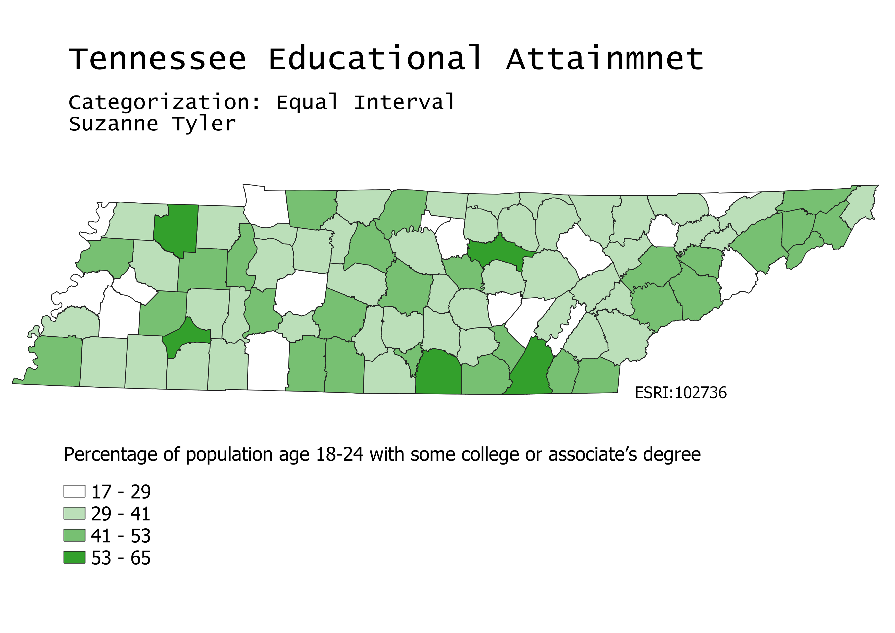

Tennessee Educational Attainment Choropleths
Suzanne Tyler
GEOG 370-006
Homework 6 Part 2
February 25, 2022
Map 1
This map was made using equal count data categorization. This means that the input values were equally distributed between each output color on the map. The nice thing about this kind of data categorization is that the map shows an even color distribution. However, this could mean that data is misrepresented. A high number of a specific value would be hard to see on this map becuase the categories each have an equal number of values.

Map 2
This map was made using equal interval categorization. Equal interval categorization is using for looking at the distribution of values accross the interval. It's easy to see based on the prevalence of one color on the map how common a specific range of data is. The downside of this is that if the data is extremely concentrated, the map might be completely dominated by one color and not provide much useful information at all. In this map it's easy to see that values between 29 and 41 are much more common than values under 29.

Map 3
Categorization used: Natural breaks